Historique et Fondation
L'Institut Supérieur d'Informatique et de Mathématique de Monastir (ISIMM) a été officiellement fondé le 9 juillet 2002, marquant le début d'une institution déterminée à exceller dans les domaines de l'informatique et des mathématiques. Depuis ses débuts, l'ISIMM s'est engagé à fournir une éducation de qualité, préparant les étudiants à relever les défis intellectuels et technologiques de notre époque. L'année 2002 a marqué le commencement d'un parcours académique et professionnel fructueux pour de nombreux individus qui ont choisi de s'associer à l'ISIMM. Au cours des décennies, l'institution a élargi son offre éducative, intégré des technologies de pointe dans son enseignement, et a établi des normes élevées en matière de recherche et d'innovation. Aujourd'hui, l'ISIMM demeure un acteur clé dans le paysage éducatif, formant des esprits brillants et contribuant au progrès continu dans les domaines de l'informatique et des mathématiques.
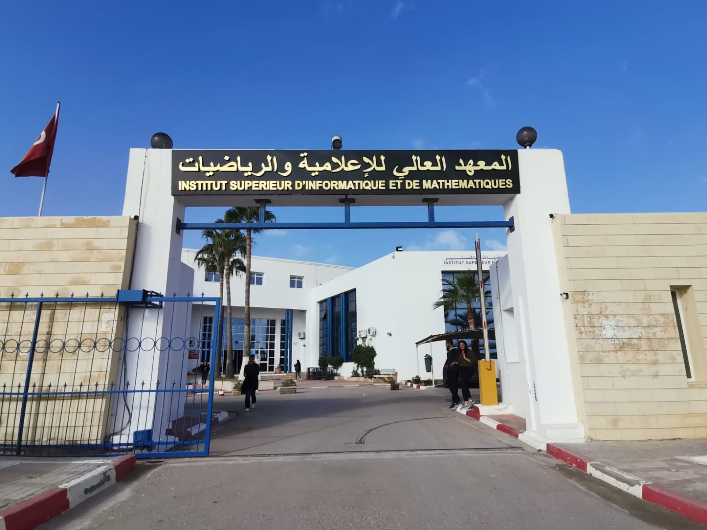
Mission et Valeurs
L'Institut Supérieur d'Informatique et de Mathématique de Monastir (ISIMM) a pour mission de fournir une éducation de qualité supérieure dans les domaines de l'informatique et des mathématiques. Nous nous engageons à cultiver des esprits critiques, créatifs et compétents, préparés à relever les défis complexes de la société contemporaine. Fondés sur l'excellence académique, l'intégrité, l'innovation et la diversité, nos valeurs sont le socle de notre communauté académique. Chez l'ISIMM, nous croyons en une éducation qui transcende les frontières, encourage la pensée critique et inspire la créativité. Nous sommes déterminés à façonner des leaders qui apporteront une contribution significative à leurs domaines respectifs et à la société dans son ensemble.
Infrastructure et Installations
Situé dans un cadre exceptionnel avec une vue imprenable sur la mer, l'Institut Supérieur d'Informatique et de Mathématique de Monastir (ISIMM) offre un environnement propice à l'apprentissage et à l'épanouissement académique.
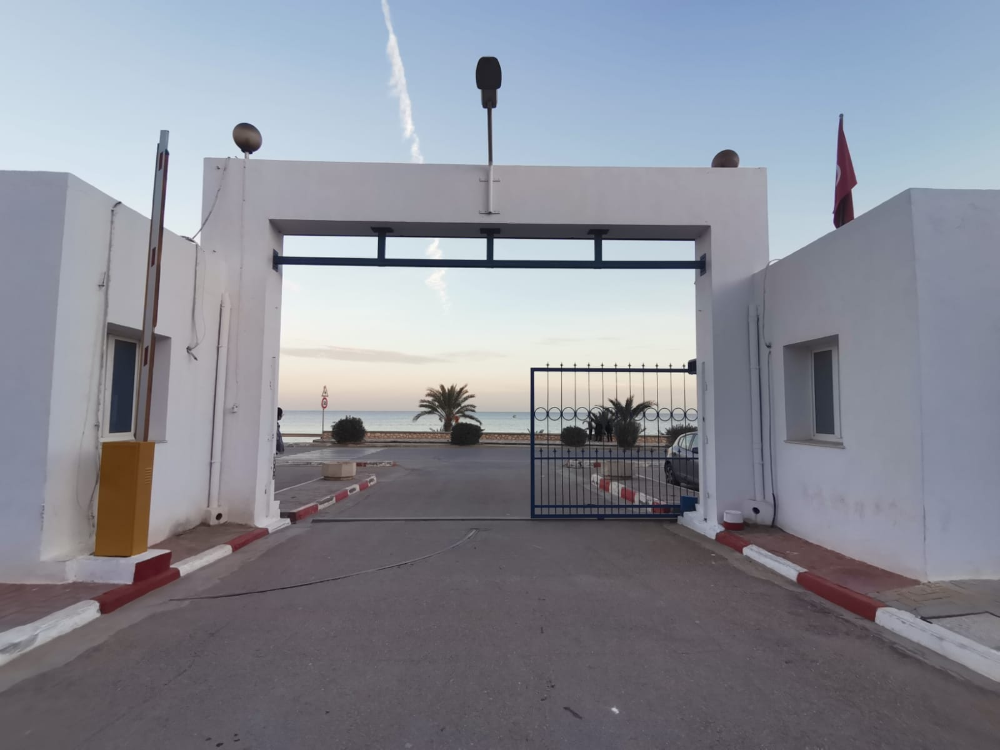
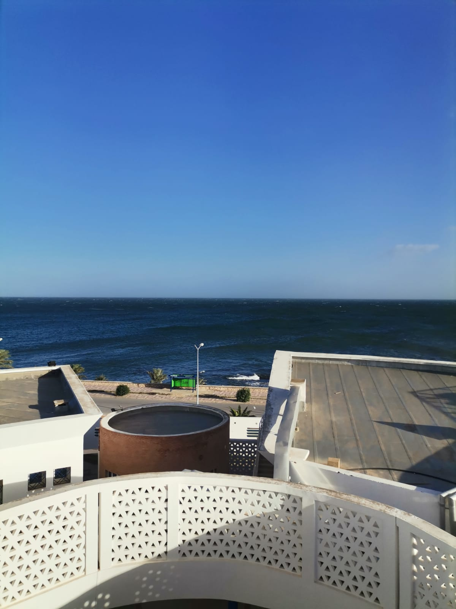
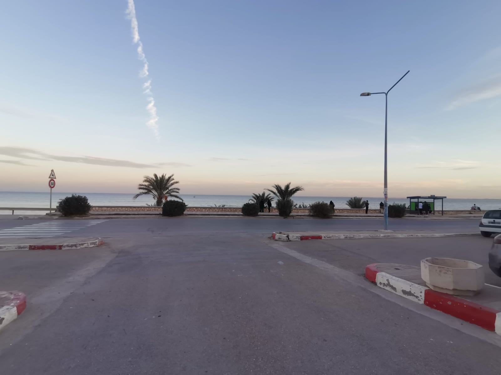
L'ISIMM abrite trois bâtiments modernes, chacun équipé de salles de classe et de laboratoires à la pointe de la technologie. Deux amphithéâtres spacieux offrent un espace d'enseignement interactif, favorisant les échanges dynamiques entre enseignants et étudiants.
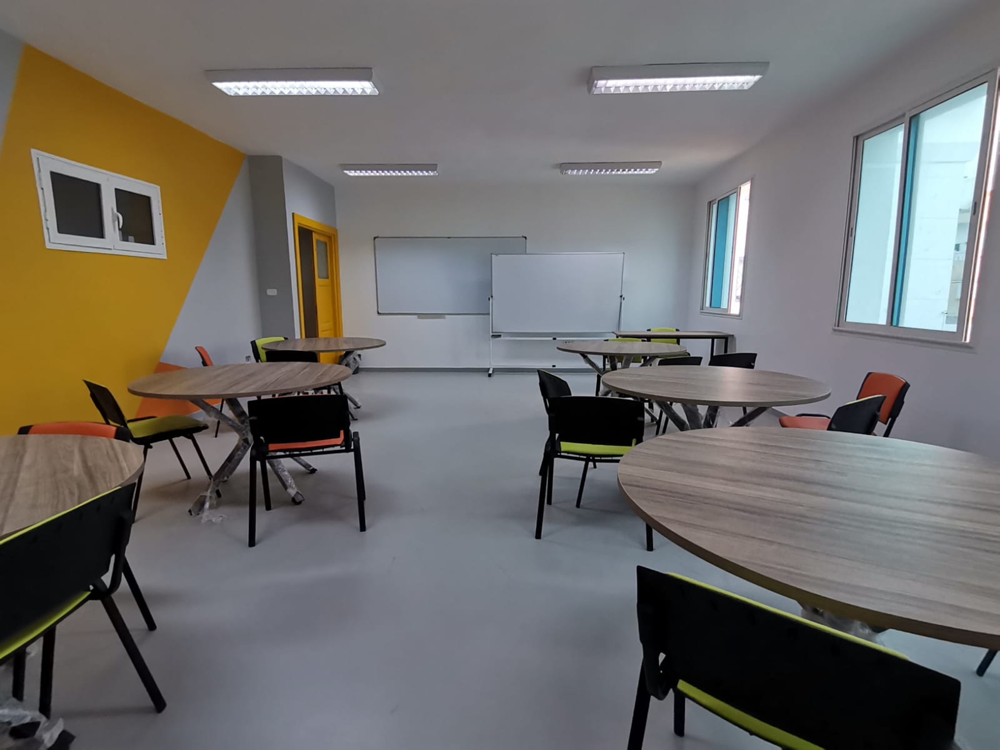
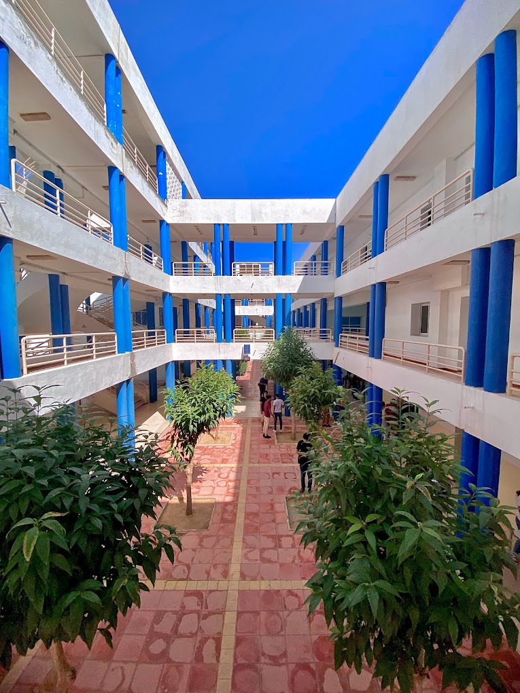

Notre bibliothèque, en tant que centre intellectuel de l'institution, propose une vaste collection de ressources académiques, de livres spécialisés et de revues scientifiques. C'est un lieu où la recherche et l'étude sont encouragées, offrant aux étudiants un accès inestimable à une diversité de connaissances.
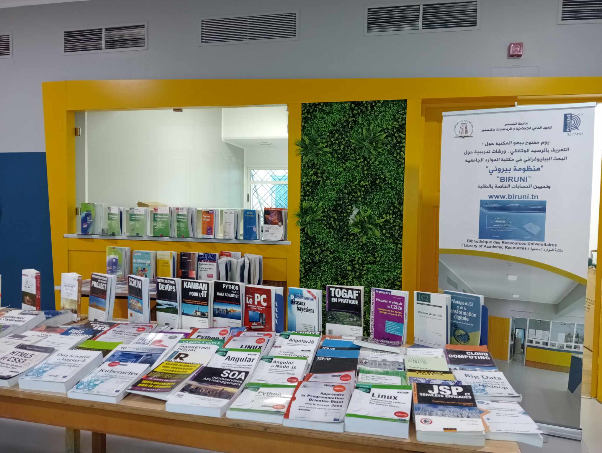
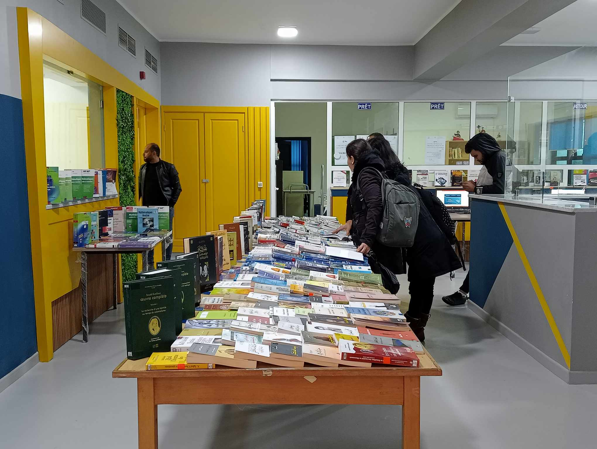
L'ISIMM comprend également un jardin paisible où les étudiants peuvent se détendre et échanger des idées dans un cadre naturel. Cet espace vert crée une atmosphère propice à la réflexion et au bien-être, renforçant ainsi la qualité de vie sur le campus.
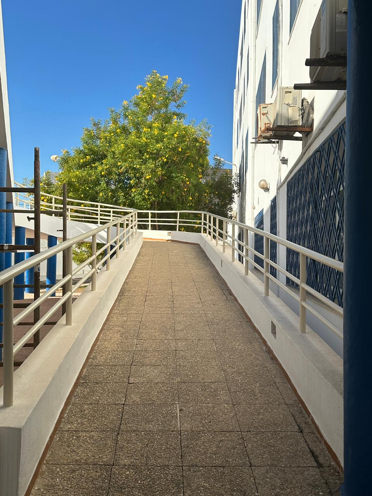
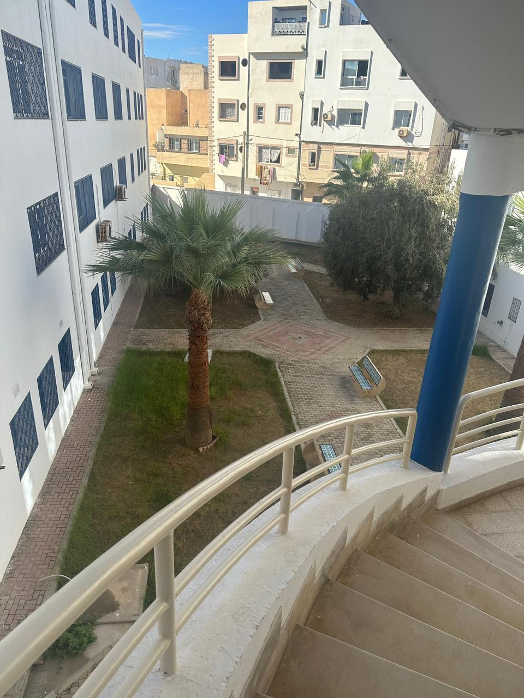
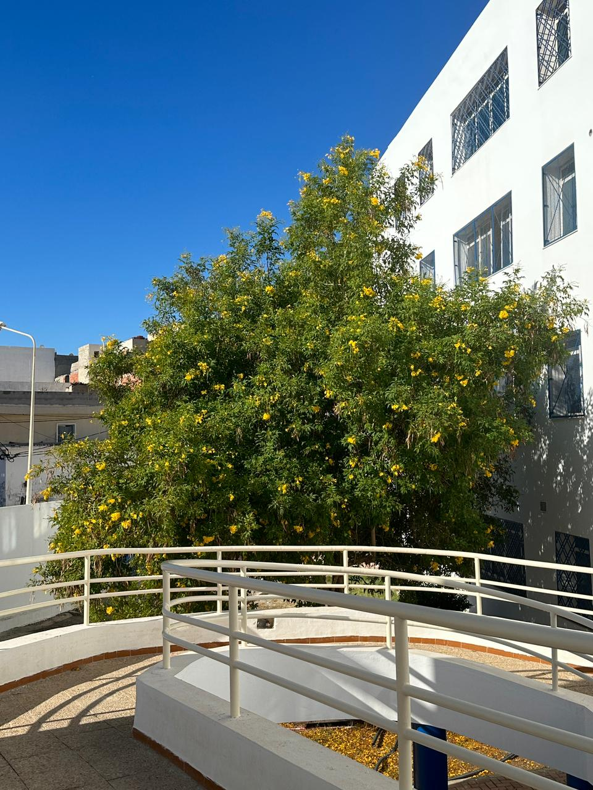
Avec une infrastructure conçue pour inspirer l'apprentissage et la collaboration, l'ISIMM s'efforce de fournir un environnement éducatif exceptionnel et stimulant.
Engagement Communautaire
L'ISIMM embrasse un engagement profond envers la communauté, local et mondial. Localement, nous soutenons des projets sociaux et encourageons le bénévolat étudiant. À l'échelle mondiale, notre environnement éducatif diversifié favorise la collaboration internationale et l'échange culturel. Notre impact va au-delà des salles de classe grâce à des partenariats stratégiques avec des institutions partageant nos valeurs. Ensemble, nous abordons les défis mondiaux et préparons nos étudiants à être des citoyens responsables et engagés. Chez l'ISIMM, l'engagement communautaire est une responsabilité que nous honorons, inspirant un changement positif tant au niveau local que mondial.